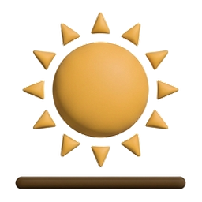

9:41
Vaqtlar taqvimingizga mos keladimi?
Toshkent · muftiyat taqvimi. Farq bo'lsa, har bir vaqtni alohida sozlang.

Quyosh chiqishi06:58devoriy taqvimingiz bilan solishtiring
Ha, to'g'riToshkent · muftiyat taqvimi. Farq bo'lsa, har bir vaqtni alohida sozlang.

Quyosh chiqishi06:58